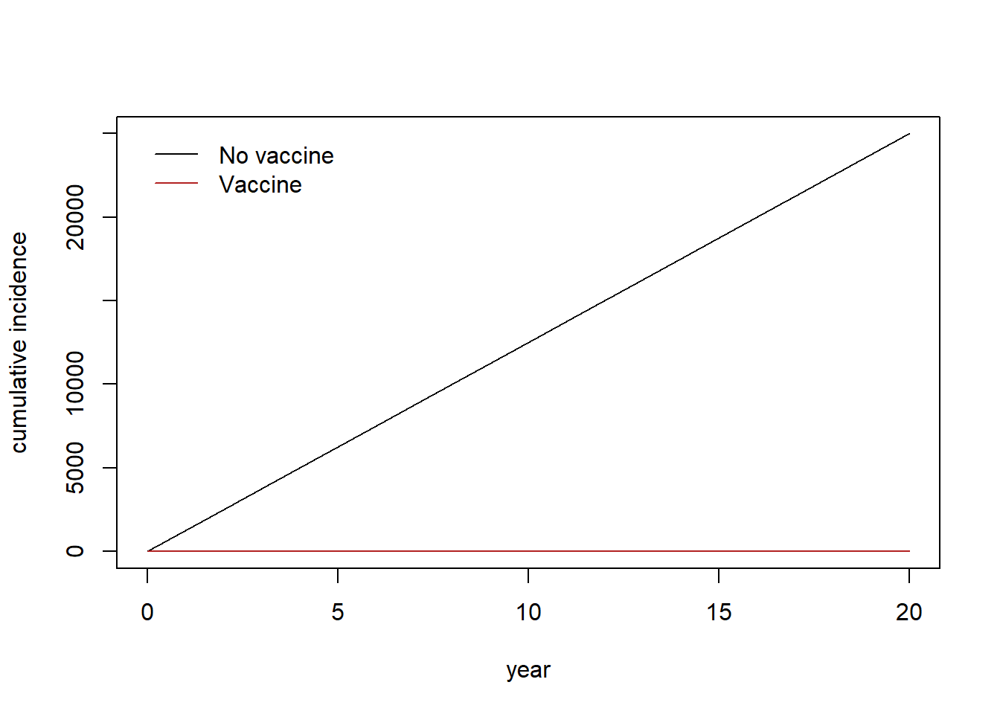
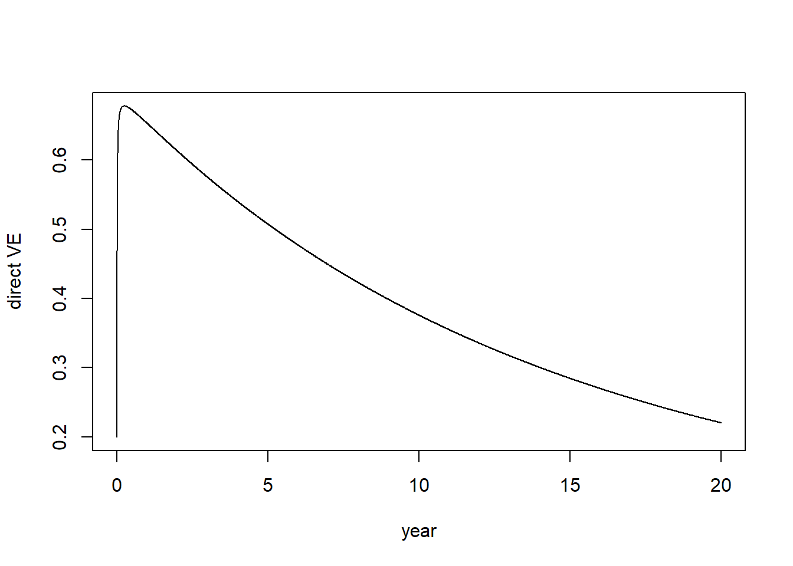
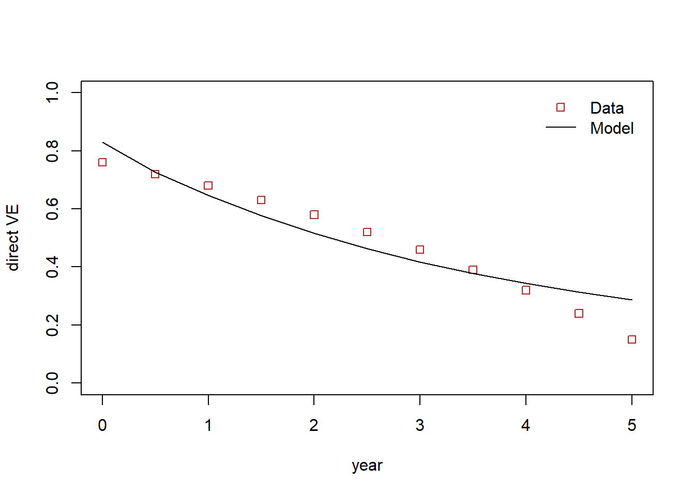

seir_vacc_trial_jl <- function(u, p, t){
# vaccine recipients lose partial immunity over time.
# this is implemented in a way that individuals in the V state
# decreases and transitions to the S state
S <- u[1]; E <- u[2]; I <- u[3]; R <- u[4]; C <- u[5]
# vaccinated cohort
V <- u[6]; # vaccinated and partially protected
VS <- u[7]; # vaccinated but immunity waned and fully susceptible
VE <- u[8]; VI <- u[9]; VR <- u[10]; VC <- u[11]
pop <- S + E + I + R
popV <- V + VS + VE + VI + VR
epsilon <- p[1] # 1/latent period
gamma <- p[2] # 1/duration of infectiousness
beta <- p[3] # transmission rate
mu <- p[4] # death rate is applied and population size decreases over time
omega <- p[5] # 1 / duration of natural immunity
omega_v <- p[6] # 1 / duration of partial vaccine-derived immunity
ve <- p[7] # vaccine efficacy
# vaccinated and unvaccinated population mix randomly
foi <- beta * (I+VI) / (pop + popV) # force of infection
muEI <- epsilon
muIR <- gamma
muRS <- omega
muVS <- omega_v
# differential equations
dS <- - foi*S + muRS*R - mu*S
dE <- foi*S - muEI*E - mu*E
dI <- muEI*E - muIR*I - mu*I
dR <- muIR*I - muRS*R - mu*R
dC <- muEI*E
dV <- - foi*(1-ve)*V - muVS*V - mu*V
dVS <- - foi*VS + muVS*V + muRS*VR - mu*VS
dVE <- foi*((1-ve)*V + VS) - muEI*VE - mu*VE
dVI <- muEI*VE - muIR*VI - mu*VI
dVR <- muIR*VI - muRS*VR - mu*VR
dVC <- muEI*VE
return(c(dS,dE,dI,dR,dC,dV,dVS,dVE,dVI,dVR,dVC))
}Waning of vaccine effectiveness
vaccine efficacy
clinical trial
SEIR
The protection derived from vaccination often wanes over time and require the second or the third doses (so-called booster doses). For example, the study showed the efficacy of cholera vaccines over five years. The vaccine efficacy (VE) over the period seems to indicate that the VE wanes over time. In this post, we will develop a \(SEIR\) model to illustrate the waning of vaccine-derived immunity.
\(SEIR\) model with vaccination
diffeqr package is used use Julia’s DifferentialEquations library
library(diffeqr)
de <- diffeqr::diffeq_setup()We assume that cholera transmission is in the steady state in the setting where the vaccine efficacy trial is examined. Algebraic solutions to the steady states (shown below) are used as initial conditions to generate initial conditions.
Ss <- "((gamma + mu) * (epsilon + mu)) / (beta * epsilon)"
Es <- "- ((gamma + mu) * (mu + omega) * ((gamma + mu) * (epsilon + mu) - beta * epsilon)) / (beta * epsilon * (gamma * (epsilon + mu + omega) + (epsilon + mu) * (mu + omega)))"
Is <- "((mu + omega) * (beta * epsilon - (gamma + mu) * (epsilon + mu))) / (beta * omega * (gamma + epsilon + mu) + beta * (gamma + mu) * (epsilon + mu))"
Rs <- "(beta * gamma * epsilon - gamma * (gamma + mu) * (epsilon + mu)) / (beta * omega * (gamma + epsilon + mu) + beta * (gamma + mu) * (epsilon + mu))"Simulation of a clinical trial
The basic idea is to use the steady states as initial conditions and therefore, cholera transmission is sustained as new susceptibles are supplied through birth and waning of vaccine-derived and natural immunity. In this setting, a clinical trial is implemented by moving some portion of the population to the vaccinated cohort. Note that the proportion of the vaccinated population, \(f\), is important in the subsequent dynamics. For example, we know that if \(f> 1- \frac{1}{R_0}\), cholera infections will die out. In this case, we can not measure the relative risk of cholera among vaccinated and unvaccinated population over a period based on the cumulative incidence. Even if \(f < 1- \frac{1}{R_0}\), moving some portion of the population into vaccinated states will perturb the steady states that were determined based on and a series of outbreaks may follow before the system reaches new steady states eventually.
Since our objective is to vaccine efficacy in this dynamic population based on cumulative incidence among vaccinated and unvaccinated people, and we used the steady states without the vaccinated population, we can set the proportion of the vaccinated population small that the system more or less maintains the states without vaccination. Wh
N <- 1e5 # unvaccinated population
f <- 1e-4 # a very small proportion of the population is vaccinated
R0 <- 2
epsilon <- 1/1.4
gamma <- 1/2
beta <- R0*gamma
# mu <- 1/(65*365) # natural death rate
mu <- 0 # natural death rate
omega <- 1/(40*365) # natural immunity waning rate
omega_v <- 1/(10*365) # vaccine-derived immunity waning rate
ve <- 0.7 # vaccine efficacy (instantaneous hazard ratio)
# vaccine efficacy based on CI will differ and we will eventually estimate
# this parameter along with omega_v
params <- c(epsilon=epsilon, gamma=gamma, beta=beta, mu=mu,
omega=omega, omega_v=omega_v, ve=ve)
# steady states for given parameters
states0 <- list(S=Ss, E=Es, I=Is, R=Rs)
steadys0 <- sapply(states0, function(x) eval(parse(text = x)))
# initial distribution of the population across the states
u0 <- c(steadys0*N,C=0,V=0,VS=0,VE=0,VI=0,VR=0,VC=0)
u0[c("V","VE","VI","VR")] <- as.numeric(steadys0*N*f/(1-f))
tend <- 20.0*365 # measure vaccin
tspan <- c(0.0, tend)
prob <- de$ODEProblem(seir_vacc_trial_jl, u0, tspan, params)
sol <- de$solve(prob, de$Tsit5(), saveat=1)
mat <- sapply(sol$u, identity)
udf <- as.data.frame(t(mat))
out <- cbind(data.frame(t=sol$t), udf)
names(out) <- c("t","S","E","I","R","C","V","VS","VE","VI","VR","VC")
# cumulative incidence
plot(1:nrow(out)/365, out[,"C"], type="l", ylab="cumulative incidence", xlab="year", col="black")
lines(1:nrow(out)/365,out[,"VC"], col="firebrick")
legend("topleft",
legend=c("No vaccine", "Vaccine"),
col=c("black", "firebrick"),
lty= 1,
bty = "n",
cex = 1.0,
text.col = "black",
horiz = F ,
inset = c(0.02,0.02))
Measure vaccine impact
novacc <- c("S","E","I","R")
vacc <- c("V","VS","VE","VI","VR")
dve <- rep(NA, nrow(out)) # direct vaccine effectiveness measured daily
for(i in 1:nrow(out)){
dve[i] <- 1 - (out[i,"VC"]/sum(out[i,vacc]))/(out[i,"C"]/sum(out[i,novacc]))
}
plot(1:length(dve)/365,dve, type="l", ylab="direct VE", xlab="year")
Estimating VE and \(\omega_V\)
Let’s suppose we want to the following dataset showing the vaccine effec
ve_obs <- c(76,72,68,63,58,52,46,39,32,24,15)/100Create a function to measure vaccine efficacy from the model based on cumulative incidence
measure_vacc_eff <- function(p, times, N=1e5, f=1e-4){
params["ve"] <- p[1]
params["omega_v"] <- p[2]
u0 <- c(steadys0*N,C=0,V=N,VS=0,VE=0,VI=0,VR=0,VC=0)
u0[c("V","VE","VI","VR")] <- as.numeric(steadys0*N*f/(1-f))
prob <- de$ODEProblem(seir_vacc_trial_jl, u0, c(0.0, max(times)+1), params)
sol <- de$solve(prob, de$Tsit5(), saveat=1)
mat <- sapply(sol$u, identity)
udf <- as.data.frame(t(mat))
out <- cbind(data.frame(t=sol$t), udf)
names(out) <- c("t","S","E","I","R","C",
"V","VS","VE","VI","VR","VC")
novacc <- c("S","E","I","R")
vacc <- c("V","VS","VE","VI","VR")
ve_sim <- rep(NA, length(times))
for (i in 1:length(times)) {
ve_sim[i] <- 1 -
((out[times[i],"VC"])/sum(out[times[i],vacc])) /
((out[times[i],"C"])/sum(out[times[i],novacc]))
}
return(ve_sim)
}Define sum of squared difference to evaluate the difference between the model and the observation
# the initial VE is not measured from the model
times = seq(6,by=6,length.out=10)*30 # times to measure VE
ssq <- function(p){
ve_sim <- measure_vacc_eff(p, times=times)
sum((ve_obs - c(p[1],ve_sim))^2)
}
# check for some predetermined ve and omega
# ssq(p=c(0.8,1/3650)) must be smaller than ssq(p=c(0.4,1/365))
ssq(p=c(0.8,1/3650))[1] 0.5765074ssq(p=c(0.4,1/365))[1] 1.260319Use the nlminb to identify the parameter values that minimize the ssq.
fit <- nlminb(c(0.2, 1/(2*365)), objective=ssq,
lower=c(0.1,1/(1000*365)),
upper=c(0.99,0.99))
ve_obs [1] 0.76 0.72 0.68 0.63 0.58 0.52 0.46 0.39 0.32 0.24 0.15round(c(fit$par[1], measure_vacc_eff(p=fit$par, times)), digits=2) [1] 0.83 0.73 0.65 0.58 0.52 0.46 0.42 0.38 0.34 0.31 0.29# png("vacc_eff_waning.png")
plot(0:10/2, ve_obs, col="firebrick",
ylim=c(0,1), xlab="year", ylab="direct VE",
type="p", pch=0)
lines(0:10/2,c(fit$par[1], measure_vacc_eff(p=fit$par, times)),
col="black")
legend("topright",
legend=c("Data", "Model"),
col=c("firebrick", "black"),
lty= c(0,1),
pch=c(0,NA),
bty = "n",
cex = 1.0,
text.col = "black",
horiz = F ,
inset = c(0.02,0.02))
# dev.off()